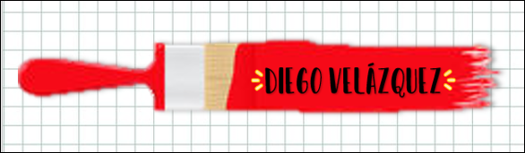

|  |  |
|---|---|
 |

Maestro sin par del arte pictórico, el sevillano Diego Velázquez adornó su carácter con una discreción, reserva y serenidad tal que, si bien mucho se puede decir y se ha dicho sobre su obra, poco se sabe y probablemente nunca se sabrá más sobre su psicología. Joven disciplinado y concienzudo, no debieron de gustarle demasiado las bofetadas con que salpimentaba sus enseñanzas el maestro pintor Herrera el Viejo, con quien al parecer pasó una breve temporada, antes de adscribirse, a los doce años, al taller de ese modesto pintor y excelente persona que fuera Francisco Pacheco. De él provienen las primeras noticias, al tiempo que los primeros encomios, del que sería el mayor pintor barroco español y, sin duda, uno de los más grandes artistas del mundo en cualquier edad.
Diego Velázquez fue hijo primogénito de un hidalgo no demasiado rico perteneciente a una familia oriunda de Portugal, tal vez de Oporto, aunque ya nacido en Sevilla, llamado Juan Rodríguez, y de Jerónima Velázquez, también mujer de abolengo pero escasa de patrimonio.
El muchacho dio pruebas precocísimas de su maña como dibujante, y aprendía tan vertiginosamente el sutil arte de los colores que el bueno de Pacheco no osó torcer su genio y lo condujo con suavidad por donde la inspiración del joven lo llevaba.
En Sevilla, durante lo que se ha dado en llamar, con artificio erudito de historiador, su primera época (aunque la obra de Velázquez es el resultado de una búsqueda incesante), su estilo sigue al de los manieristas y los estudiosos del arte veneciano, como Juan de Roelas, pero adoptando los claroscuros impresionantes de Caravaggio, si bien esta última influencia ha sido discutida. No obstante, Velázquez se decantará pronto por un realismo barroco, audaz y estremecido, grave y lleno de contrastes, seguido igualmente por Francisco de Zurbarán o Alonso Cano.
Dicho realismo, en su vertiente más popular, había sido frecuentado por la literatura de la época, y ese mismo aire de novela picaresca aparece en los Almuerzos que guardan los museos de Leningrado y Budapest, así como en Tres músicos, donde, sin embargo, desaparece el humor para concentrarse el tema en la descripción de la maltrecha dignidad de sus protagonistas. Más curioso es aún cómo, también por aquella época, utiliza los encargos de asuntos religiosos para arrimar la ascua a su sardina y, dejando en un fondo remoto el episodio que da título al cuadro, pasan a un primer plano de la representación rudos personajes del pueblo y minuciosos bodegones donde se acumulan los objetos de la pobre vida cotidiana. Es el caso de Cristo en casa de Marta y María, cuadro en el que adquiere plena relevancia la cocina y sus habitantes, el pescado, las vasijas, los elementos más humildes.
El Museo del Prado guarda igualmente pinturas del período sevillano, como el espléndido lienzo La adoración de los Reyes Magos, fechado en 1619 (poco después de su matrimonio y de que Juana le diese descendencia), y donde se ha querido ver, sobre todo en los rasgos infantiles del Niño Jesús, un homenaje a su familia y un hálito de la felicidad del flamante padre.
Hacia 1629 pinta Velázquez su primer gran cuadro de tema mitológico, llamado Los borrachos porque el asunto dedicado a Baco se convierte en sus manos en una estampa de las francachelas populares de la época. Bien es cierto que, a su regreso a España, realizó obras de mayor envergadura y empaque, como La rendición de Breda, también conocida por Las lanzas, pero en esta pintura de compromiso, terminada en 1635 para el Salón de los Reinos en el recién inaugurado Palacio del Buen Retiro, también conmueve más lo anecdótico que la pomposa rememoración del pasado triunfo de un predecesor de Felipe IV.
Por empeño personal de Felipe IV, Velázquez recibiría, un año antes de morir en Madrid el 6 de agosto de 1660, la preciada distinción de caballero de la Orden de Santiago, un honor no concedido nunca ni antes ni después a pintor alguno. Y aunque, al demoler la iglesia, nadie recordaba que sus restos habían sido sepultados en la Parroquia de San Juan Bautista, cuando en 1990 se organizó una magna retrospectiva de su obra en el Museo del Prado, miles y miles de personas llegadas de todos los puntos cardinales afluyeron incesantemente para reír el gesto idiota del bufón Calabacillas, admirar la pincelada que plasma el vestido de una infanta, interrogar la estampa ecuestre del conde duque de Olivares y respirar el aire penumbroso del siglo XVII aquietado e inmortalizado en los cuadros de Velázquez.